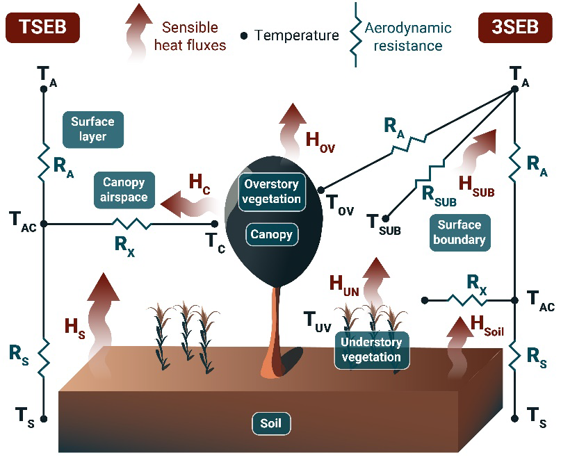
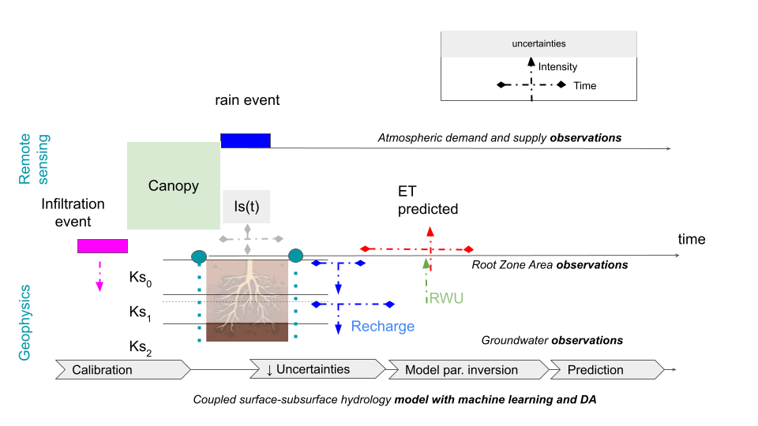

WP2
Coupling between geophysical, RS and water-energy balance model
The value of geophysical datasets (D1.1 and D1.2) lies in their integration within a physical model to establish the connection between geophysical measurements and water pathways within the Ecologically Critical Zone (ECZ). The theoretical foundation of WP2’s deliverables centers on deepening our understanding of soil-moisture-plant interactions through the application and refinement of the Soil Water Balance (SWB) model (D2.2).
This model not only characterizes soil states (e.g., soil water potential ψsoil, soil moisture θsoil) but also parameterizes soil properties (such as hydraulic conductivity Ks and porosity) and plant properties (e.g., leaf water potential, stomatal conductance). By assessing their respective influences on water pathway processes, the model provides a comprehensive framework for analyzing these interactions.
Additionally, the model incorporates petrophysical relationships to translate physical measurements (D2.1) into meaningful proxies. These relationships are crucial for offering stakeholders actionable metrics for forest management, including practices like mulching.
At both the trial field and catchment scales, evapotranspiration (ET) quantification will be achieved using thermal-based energy balance models, specifically Surface Energy Balance (SEB) models powered by Land Surface Temperature (LST) data. High-resolution LST data will be obtained through image sharpening techniques (Guzinski et al., 2023). The SWB model (CATHY) will be implemented and calibrated using Earth Observation (EO) satellite data, either to refine model parameters or update state variables whenever new observations are available. The model will operate continuously, with an EO data assimilation scheme to characterize subsoil properties.
Simultaneously, calibration of the SWB model using ground geophysical measurements will involve integrating geophysical data into SEB models. This process will address temporal data gaps and enhance the model’s accuracy.
WP2 is expected to contribute to Goal 2 by providing:
- Improved estimates of green water footprint (ETgreen)
- Enhanced predictions of groundwater flow and recharge
- Advanced water supply forecasts (D2.3)


Contents